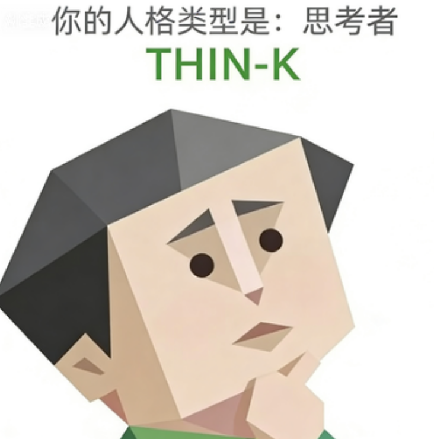

THIN-K（思考者）
已深度思考100s。
经研究发现，THIN-K人格的大脑构造与常人有根本性不同。正如名称所示，您的大脑长时间处于思考状态。您十分会审判信息，注重论点、论据、逻辑推理、潜在偏见，乃至"作者本人三代以内思想背景调查报告"的全套材料。在这个信息爆炸的时代，您绝不会轻易盲从，会在关系中衡量利弊，也十分捍卫自己的自我空间。当别人看到您独处时在发呆？愚蠢，那不是发呆，那是您的大脑正在对今天接收到的所有信息进行分类、归档和销毁。

已深度思考100s。
经研究发现，THIN-K人格的大脑构造与常人有根本性不同。正如名称所示，您的大脑长时间处于思考状态。您十分会审判信息，注重论点、论据、逻辑推理、潜在偏见，乃至"作者本人三代以内思想背景调查报告"的全套材料。在这个信息爆炸的时代，您绝不会轻易盲从，会在关系中衡量利弊，也十分捍卫自己的自我空间。当别人看到您独处时在发呆？愚蠢，那不是发呆，那是您的大脑正在对今天接收到的所有信息进行分类、归档和销毁。
